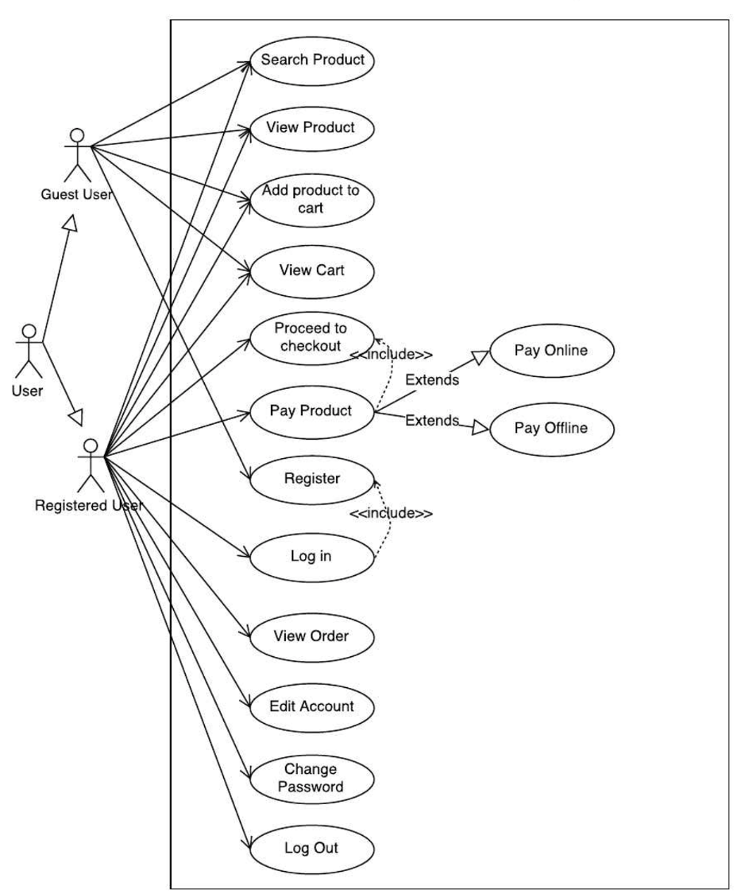
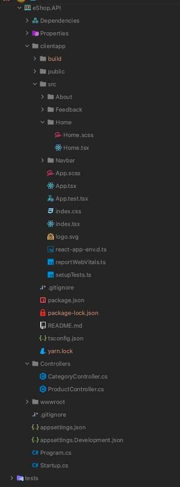
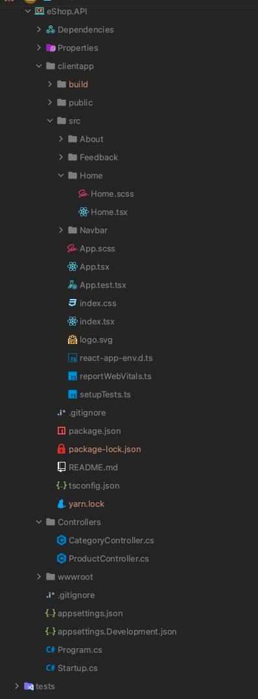

Тема: ДЕПЛОЙ ПРОЕКТУ
Мета: Придбати практичні навички роботи з виконання деплою проекта за допомогою Docker та Azure.
- Постановка задачі:
- 1. Створити контейнер за проектом за допомогою Docker.
- 2. Виконати деплой проекту у мережу за допомогою Azure.
Наведемо повну діаграму класів нашого застосунку

Наведемо діаграму варіантів використання нашого застосунку
Наведемо діаграму станів нашого застосунку

Наведемо діаграму послідовності нашого застосунку

Наведемо діаграму компонентів нашого застосунку

Теорія до використання Docker
Docker — інструмент з відкритим сирцевим кодом, який автоматизує розгортання застосунку у середовищах, що підтримують контейнеризацію. Docker дозволяє не переймаючись вмістом контейнера запускати довільні процеси в режимі ізоляції і потім переносити і клонувати сформовані для даних процесів контейнери на інші сервери, беручи на себе всю роботу зі створення, обслуговування і підтримки контейнерів. Docker доповнює інструментарій LXC більш високорівневим API, що дозволяє керувати контейнерами на рівні ізоляції окремих процесів.
Docker Compose - інструмент для створення і запуску многоконтейнерних Docker додатків. У Compose, ви використовуєте спеціальний файл для конфігурації ваших сервісів додатки. Compose чудовий для розробки, тестування і налаштування середовища, а також безперервної інтеграції. Compose захищає всі томи використовуються вашими севіс. Коли запускається docker-compose up, якщо існують контейнери від попередніх запусків, то томи даних копіюються зі старих контейнерів в нові. Цей процес гарантує, що будь-які дані, які ви створили в обсягах не загубляться. Docker Compose кешируєт конфігурацію використану для створення контейнера. Коли ви перезапускаєте сервіс без змін, Compose використовує існуючі контейнери. Повторне використання контейнерів дозволяє дуже швидко вносити зміни в ваше оточення.
Теорія до використання Azure
Хмарна платформа та інфраструктура корпорації Microsoft, призначена для розробників застосунків хмарних обчислень (англ. cloud computing) і покликана спростити процес створення онлайнових додатків. Windows Azure дозволяє створювати додатки як за допомогою Microsoft .NET Framework і Visual Studio, так і за допомогою інших інструментів. Операційна система працює на серверах Microsoft, доступ до неї можна отримати за протоколами HTTP, Representational State Transfer (REST), WS-* і Atom Publishing Protocol (AtomPub). Платформа Azure Services Platform включає п'ять основних компонентів. Це сама операційна система Windows Azure, що керує дисковим простором, додатками і мережами, і Microsoft SQL Services для роботи з базами даних. Також в платформу входять Microsoft .NET Services, Live Services, і бізнес-компонент, що включає Microsoft SharePoint Services і Microsoft Dynamics CRM Services. Важливим компонентом є SDK емулятор хмари. Застосунок працює на емуляторі, він має доступ до бібліотек, зареєстрованих у місцевому глобальному кеші збірок (GAC), для реєстрації та конфігурації комп'ютера. Ці послуги доступні не на фактичній платформі. Емулятор дозволяє запам'ятовувати діагностичну інформацію на консолі або використовувати Windows Azure Diagnositcs. Уся інформація зберігається в спеціальній таблиці в Windows Azure Storage. Всі екземпляри, що працюють на емуляторі, мають привілеї адміністратора і ті, які працюють на платформі є силою стандартного користувача Windows. Емулятор неповною мірою відображає поведінку балансування навантаження, використовувану на Windows Azure Platform.
Файлова структура проекту
 

Створення та використання Docker
Для того розвернути наш додаток, нам потрібно буде створити Docker-файл, він буде контейнером для нашого додатку.

Тут можна побачити що Докер файл створюється з використанням технології .NET 5.0 та nodejs, це є розгортанням чаcтини API, нашого проекту. Тут відбувається копіювання файлів проекту, а також вміст усіх інших папок в окрему робочу директорію. Пізніше ці файли будуть використовуватись, щоб скомпілювати бібліотечні файли, які по суті і будуть використовуватись для запуску веб-застосунку.
Також ми можемо переконатися що наш контейнер працює вірно, усі порти налаштовані правильно, та немає жодних помилок.
Деплой проекту у сервіс Azure
Тепер ми вирішили перейти до етапу розгортання додатку у хмарному сховищі Azure, для цього використовують свій акаунт, на якому маємо тестові гроші за студентської підпискою, ми створюємо сервіс та вказуємо усі потрібні параметри, за нашими потребами:
Тут ми вказуємо який сервер нам потрібно використовувати, для якої території ми прогнозуємо використання нашого проекту, від цього вибираємо потрібний сервер для найкращої швидкодії. А також ми обираємо ім’я нашого домену, який буде використовуватися під час деплою.
Після цього ми можемо контролювати процес за допомогою статистики подій, де ми бачимо хто саме зробив ту або іншу дію, яку саме дію він зробив, та її статус виконання. Коли наш сайт вже буду повністю завантажений у сервіс Azure, не можемо контролювати його роботи за допомогли статистики, яка у реальному часі показує статус роботи проекту, кількість відвідувань, кількість запитів, та час, який користувач провів користуючись проектом. Це можна побачити на рисунку, що показує статистику сайту у сервісі Azure.
Після того як сайт вже повністю завантажена можемо перейти за посиланням та знайти його у мережі, повністю працюючим.
Код классу Program

Код классу StartUp


Папка з проектом
Завантажити папку з проектомЗапуск ехе-файла
Завантажити програмуВисновки
В цій лабораторній роботі ми вивчили та виконали деплой проекта за допомогою Microsoft Azure. Також використали Docker та Docker Compose для цього завдання.